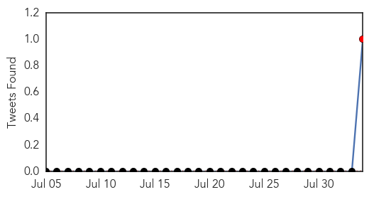
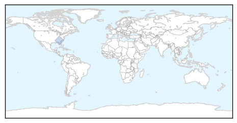
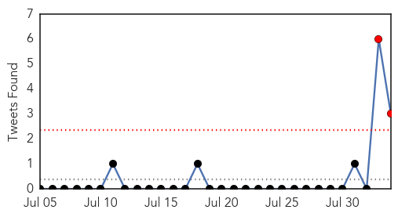
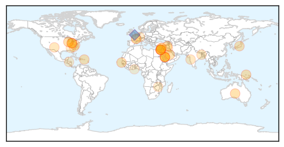

Hemmorhagic Fever
30-Day Web Trend
30 alerts, 0 warnings
30-Day Twitter Trend
1 alerts, 0 warnings

Article Locations
Article Confidences

Top Articles:
-
No articles found for Aug 03, 2014
Top Tweets:
- 0.921
- RT: Any U.S. hospital following CDC's infection control recommendations can safely managing a patient w/ Ebola hemorrhagic fever.
Unknown
30-Day Web Trend
8 alerts, 3 warnings

30-Day Twitter Trend
2 alerts, 0 warnings

Article Locations
Article Confidences
Top Articles:
- 0.982
- Ramadan pilgrimage season in Saudi Arabia mostly free from MERS
- 0.982
- Ramadan pilgrimage season in Saudi Arabia mostly free from MERS
- 0.970
- Ramadan pilgrimage season in Saudi Arabia mostly free from MERS
- 0.929
- NSW woman dies from meningococcal disease
- 0.922
- Ramadan pilgrimage season in Saudi Arabia mostly free from MERS
- 0.917
- Chicago Tribune
- 0.866
- Lebanon's army chief says border town attack was premeditated
- 0.866
- Islamic State seizes another northern Iraqi town
- 0.866
- Israeli strike kills 7 at U.N. school in Gaza
- 0.866
- A relative reacts at a badly damaged house in Jabaliya refugee camp in the northern Gaza Strip
- 0.866
- A fallen plantain tree is pictured after heavy rain, due to Tropical Storm Bertha passing through southern Puerto Rico, in Aceituna town
- 0.866
- Magnitude 6.6 earthquake strikes near Papua New Guinea; no tsunami expected
- 0.848
- Japanese Encephalitis continues to wreak havoc in Assam
- 0.748
- Chickenpox at NM FLETC prompts quarantine lockdown
- 0.737
- Ohio declares emergency as contamination leaves 400,000 without safe drinking water
- 0.731
- Swimmers: avoid contaminated waters (updated)
- 0.705
- Pune landslide: Maharashtra on guard to check for water contamination
- 0.694
- Crib deaths back in Bengal
- 0.658
- UN warns of 'rapidly unfolding' health disaster in Gaza
- 0.635
- UN warns of 'rapidly unfolding' health disaster in Gaza
- 0.598
- Toxins in water leads to state of emergency in Ohio
- 0.579
- Video: Gaza refugees return home to devastation
- 0.579
- US border crisis: 'The children are refugees, not immigrants'
- 0.579
- UN warns of 'humanitarian tragedy' as ISIS seizes Sinjar
- 0.579
- Scores killed as troops clash with rebels in Damascus area
- 0.579
- Israel says missing soldier was 'killed in battle'
- 0.579
- In pictures: French and German leaders mark WWI centenary
- 0.579
- Hundreds dead after quake strikes Yunnan province
- 0.579
- US doctor infected with Ebola arrives home for treatment
- 0.566
- Why seek treatment abroad, asks Msipa
- 0.553
- Toledo water improving but toxins still a concern for 2nd day
- 0.553
- Toledo water improving but toxins still a concern for 2nd day
- 0.537
- Some 400,000 in Ohio without drinking water, tests show lower toxin levels
- 0.521
- Health personnel asked to increase home-based care
- 0.512
- Some 400,000 in Ohio without drinking water, tests show lower toxin levels
- 0.503
- Showering declared potential hazard in Toledo, Ohio
Top Tweets:
- 0.699
- RT: Toda fiebre en la vuelta de un viaje tropical es malaria mientras no se demuestre lo contrario
- 0.649
- RT: Cada día 1.600 niños menores de 5 años mueren en Zambia por NO tener agua potable. Más que el sida y la malaria juntos en tod…
- 0.624
- RT: Paludismo, fiebre amarilla, malaria, etc todos estos virus acabados hace anos y aqui de moda nuevamente. No cabe duda q hemo…
- 0.553
- carla morrison en el d√≠a de hoy en vez de alimentar mi nostalgia, alimenta mi felicidad üòÑ